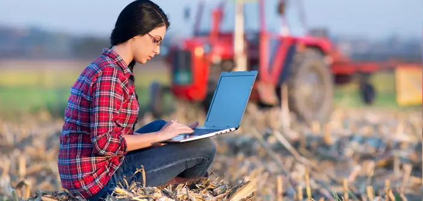

A tecnologia está transformando o campo e, cada vez mais, mulheres estão liderando essa mudança, impulsionando a inovação e o desenvolvimento do agronegócio. A agricultura de precisão, por exemplo, utiliza tecnologias como GPS, drones e sensores para otimizar a produção e garantir a sustentabilidade. Além disso, a inclusão digital e a capacitação das mulheres no uso de smartphones e outras ferramentas tecnológicas são essenciais para o seu empoderamento e autonomia no campo.
Elaboração:
Agricultura de Precisão:
A agricultura de precisão, que utiliza tecnologias como GPS, drones e sensores, permite aos agricultores tomar decisões mais assertivas, baseadas em dados precisos sobre o solo, clima, pragas e doenças, o que resulta em um uso mais eficiente de insumos e uma produção mais sustentável e rentável.
Drones:
Os drones são utilizados para mapear e monitorar as áreas de cultivo, identificar áreas com problemas e otimizar a aplicação de fertilizantes e outros insumos, além de permitir o monitoramento de pragas e doenças.
Sensores:
Os sensores coletam dados sobre o solo, o clima, a saúde das plantas e outros aspectos relevantes para a produção, permitindo aos agricultores tomar decisões mais assertivas e otimizar o uso de recursos.
Inclusão Digital e Capacitação:
A inclusão digital é fundamental para que as mulheres possam acessar e utilizar as ferramentas tecnológicas disponíveis no campo, como smartphones e outros dispositivos, para se capacitar, aprender sobre novas técnicas de produção e se conectar com outras mulheres do agronegócio.
Empoderamento das Mulheres:
A capacitação e o acesso à tecnologia permitem que as mulheres do campo se tornem mais independentes e atuem com mais autonomia na gestão das suas propriedades e na tomada de decisões importantes para a produção.
Protagonismo Feminino:
Muitas mulheres estão liderando a inovação no campo, desenvolvendo novas tecnologias e soluções para o agronegócio, demonstrando o seu papel fundamental na transformação do setor.
Principais Benefícios:
Aumento da Produtividade:
As tecnologias de precisão e a inclusão digital permitem que os agricultores aumentem a produtividade e a qualidade dos seus produtos, otimizando o uso de recursos e reduzindo custos.
Sustentabilidade:
A agricultura de precisão e a utilização de tecnologias mais eficientes contribuem para a redução do uso de insumos, como fertilizantes e água, tornando a produção mais sustentável.
Empoderamento das Mulheres.
